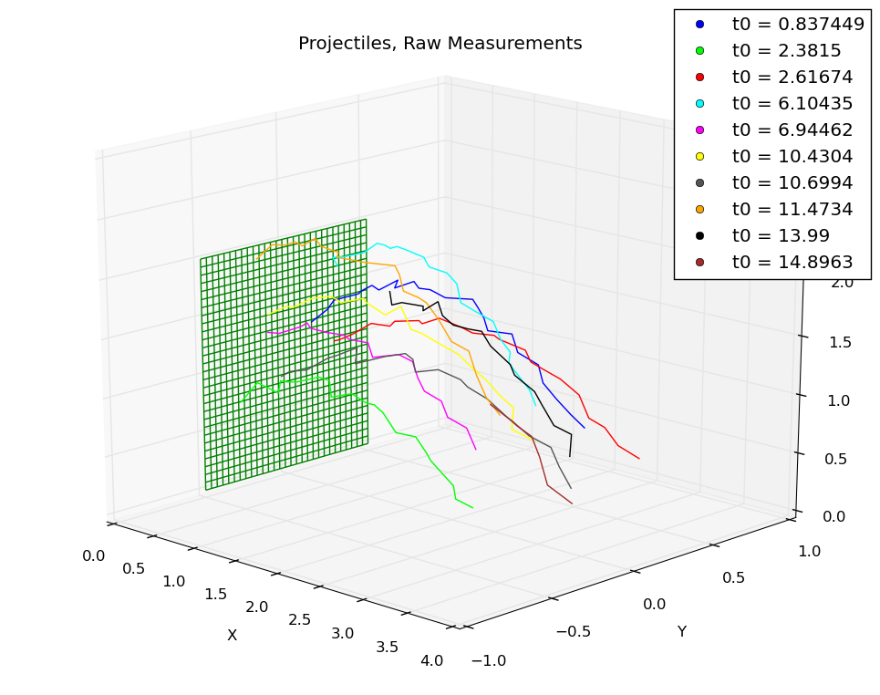
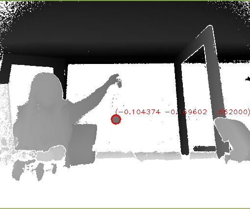
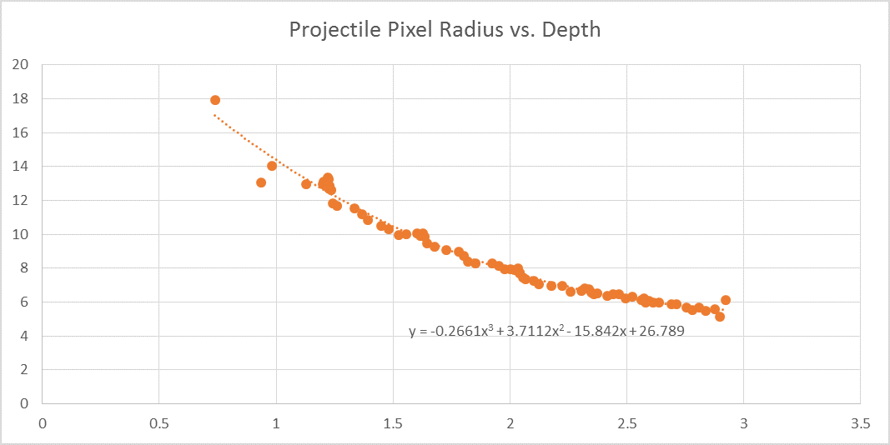
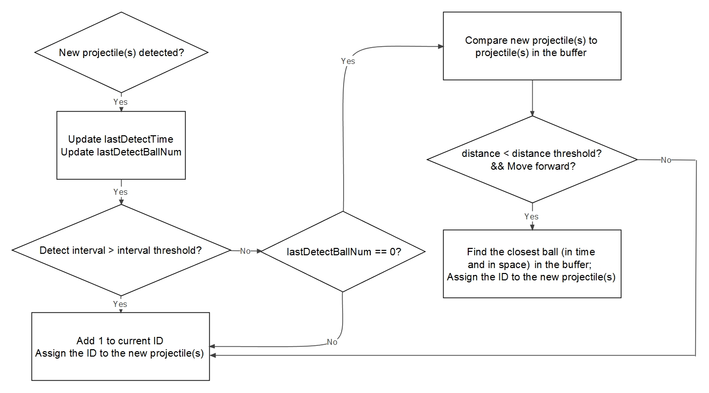

The Iron Dome is a projectile defense system using the Kuka LBR iiwa robot. The system dynamically identifies incoming projectiles headed toward a target, estimates their trajectories, and intercepts them in a fraction of a second.
Our vision system uses an off-the-shelf Kinect V2 to detect and label incoming projectiles. The measurements are sent through a Kalman filter and trajectory predictor to determine the intersecting time, position and orientation with the robot defensive zone. The robot is then commanded to move to the desired configuration in advance of the projectile(s), preventing them from hitting the target. To improve robustness, stability, and reliablity of the control of the robot, we run our task space position and orientation controller in software, adding a tangent potential field to push each joint away from reaching joint limit, and clamping position and orientation errors to avoid large motions. We then feed joint angles directly from our simulated result to the physical robot, which runs a very fast joint position controller. The result is a system which can dynamically respond to thrown projectiles from a distance of as little as three meters.
Code for this project is publicly available on the iron-dome Github repository.
The physical robot is commanded using direct open-loop joint-space control, where the joint positions commanded are the joint positions of the robot's counterpart in our real-time simulation. The simulation and command are both done at 10kHz. The rest of the robot's operation can be explained by a description of the simulation. Our simulation was an essential tool for this project because it's modularity allowed us to easily command the simulated robot or the real robot, interchange simulated projectile data for real data from the vision system, and rapidly debug and test different controllers.
When the robot is actively searching for projectiles, it is in a rest state and moves to a position we have chosen to allow it to quickly reach the area a projectile is likely to enter its workspace. At this point the vision system is searching for valid targets.
When an incoming projectile is found, we use a Kalman filter to predict the trajectory. Once the trajectory converges, the next state depends on if the predicted trajectory intersects the interception boundary (a sphere section). If it does not intersect, the robot returns to searching for a projectile. If more than one projectile is detected at once, this trajectory prediction runs simultaneously, but the robot evaluates the projectiles as targets in the order that the predicted trajectories converge.
Once a projectile has been targeted, the robot tries to move to the position at which the projectile will intersect its workspace. The orientation is calculated to be opposite the velocity vector of the projectile at interception. It waits in this configuration until hitting the ball, then returns to the rest state.
The robot intercepts projectiles on a floating window in front of it, which is a bounded section of a sphere. For each projectile the robot can see, the trajectory is predicted based on the observations from the Kinect depth image, which are fed into a Kalman filter to deal with the noise and any problems with detection of the ball. The intersection point is found by solving the following system of equations:
\begin{align*} x &= x_0+v_x*t+\frac{1}{2}a_x^2\\ y &= y_0+v_y*t+\frac{1}{2}a_y^2\\ z &= z_0+v_z*t+\frac{1}{2}a_z^2\\ R^2 &= (x_s-x)^2+(y_s-y)^2+(z_s-z)^2 \end{align*}Where \([x,y,z]\) is the position of the ball with respect to the robot base frame. The acceleration in z is assumed to be \(-9.81 \frac{m}{s}\) while in x and y it is assumed to be zero. The radius \(R\) and position of the sphere are chosen such that the window in front of the robot is within the usable workspace of the robot. We used a polynomial solver on the fourth order equation in \(t\) to find the time and location that the predicted trajectory would intercept the sphere. If one or more real roots exist, then there will be an intersection at the time of the lowest real root.
Below are the equations to calculate the commanded generalized
forces, \(\tau\), of our robot. Subscripts P and R stand for
position and rotation, respectively, and subscripts C and D
stand for current and desired.
\begin{align} \tau_{total} &= \tau +G(q)\\ \tau &= J^{T}(\Lambda F)\\ \Lambda &= (JM^{-1}J^{T})^{-1}\\F_{P} &= -k_{pP}*dx - k_{vP}*\dot{x}\\ F_{R} &= -k_{pR}*d\phi - k_{vR}*\omega\\ dx &= x_{C} - x_{D}\\ d\phi &= -\frac{1}{2}(s_{1C}\times s_{1D}+s_{2C}\times s_{2D}+s_{3C}\times s_{3D})\\ \omega &= J_{R}*\dot{q}\\ \dot{x} &= J_{P}*\dot{q} \end{align} \[ R_{CO} = \begin{bmatrix} \vert & \vert & \vert\\ s_{1C} & s_{2C} & s_{3C}\\ \vert & \vert & \vert\\ \end{bmatrix}\\ R_{DO} = \begin{bmatrix} \vert & \vert & \vert\\ s_{1D} & s_{2D} & s_{3D}\\ \vert & \vert & \vert\\ \end{bmatrix} \]
Our control implementation for simulation is based on giving the robot a desired position and orientation in order to meet the projectile hurling rapidly at it, and using the known dynamics of the robot to calculate the necessary joint torques to reach the commanded configuration (1). The forces for the translational and rotational parts of the controller are calculated separately and then combined, with the position and rotation parts denoted by the subscripts P and R.
We use the pseudo-inverse method to find the task space mass matrix \(\Lambda\) (3) from the joint space matrix. We find the task space torques using PD control (4)(5), using the error in position (6) for the cartesian force and error in orientation (7) for the moments \(F_{R}\).
The error in orientation (7) is found by taking the cross product of each column vector in the current rotation matrix \(R_{CO}\) by the column vectors in the matrix representing the desired rotation \(R_{DO}\). This gives a torque axis and magnitude which the proportional rotation gain \(k_{pR}\) is applied to.
Additionally, in practice we clamped the position and orientation error vectors to a maximum magnitude, to avoid commanding desired positions that are too far away.
To test our control algorithms and state machine separately from the vision system, we created a separate program that generates fake projectile measurement data based on statistical distributions. This program reports projectile IDs, timestamps, and noisy position measurements with an identical interface and with the same frequency as the real vision system.
The projectiles are generated based on a Poisson distribution that models random events. The initial positions and velocities of the projectiles are based on a multivariate Gaussian distribution. Observations are reported by calculating the result of the projectile motion equations with the current time, and then adding Gaussian noise along each axis. Adjustable parameters include the average throw time, the mean and variance of the initial position and velocities, the average throw angle, and the measurement noise standard deviation.
This program helped us understand the requirements of our system, as we could run trials fully in simulation and see what kind of response times and trajectories we needed to successfully intercept projectiles. It also helped us tune the Kalman filter that allows us to predict the future position of projectiles, which is absolutely critical. The plot below shows example trajectories of simulated projectiles.
The vision task of our project is to track multiple projectiles and obtain their world coordinates (x, y, z) along with a timestamp. The result is used for predicting the trajectories so that we can command the robot to a desired position and orientation in advance of the projectile. With this in mind, our vision system must meet the requirements of high speed and accuracy.
We are using the Kinect for Windows V2 to track incoming projectiles. The depth sensor of the Kinect has a frame rate of 30Hz and improved resolution (compared to Kinect V1) of 512 x 424, as well as a much lower latency. We run a simple blob detector on the depth image to segment projectiles from the background. As introduced on the OpenCV documentation, a simple blob detector extracts blobs by running multiple binary thresholding on the image, finding connected components(contours) on each binary images, and grouping close centers of the contours from different binary images. As our projectile is a ball with certain size, we also filter by circularity and area.
After extracting blobs from the image, we further analyze the result to filter out noise based on a radius/depth ratio of detected blobs. We record the ball radius in pixels versus depth and fit the data into a 3rd order polynomial equation (shown in figure below). In our program, we calculate the “desired” pixel radius of each blob using the depth of its center, and filter out those with a radius that has more than 10% error from the desired value.
For better handling of multiple projectiles, we implemented several ID assignment strategies to assign each projectile a unique ID. Basically we assume a new projectile is coming if we haven’t detected anything in the past second (or less than one second). And we decide whether a projectile is the same one as detected before by looking at its centroid distance and the time stamps. For this purpose, detected balls are stored in a first come first out buffer container each for 0.3 seconds (approximately 10 frames). A decision flowchart is shown below.
A large challenge was calibrating the frame between the Kinect, which was positioned in front and to the side of the Kuka, with the robot base frame. We created a four point calibration method that allowed us to generate an accurate tranformation matrix from the kinect frame to the robot base frame. These points can't be coplanar, and we found it necessary to use points that were in diverse locations in the camera frame to decrease the error in the matrix. One benefit of this approach is that we don't need to fix the Kinect's position and orientation, and the orientation and position are found using the Kinect's own sensor. The transformation was applied to projectile observations to put them in the robot base frame.
© Stanford University.
Last updated on December 11th, 2014